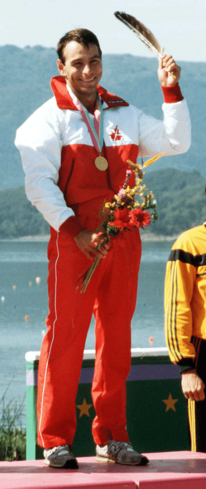
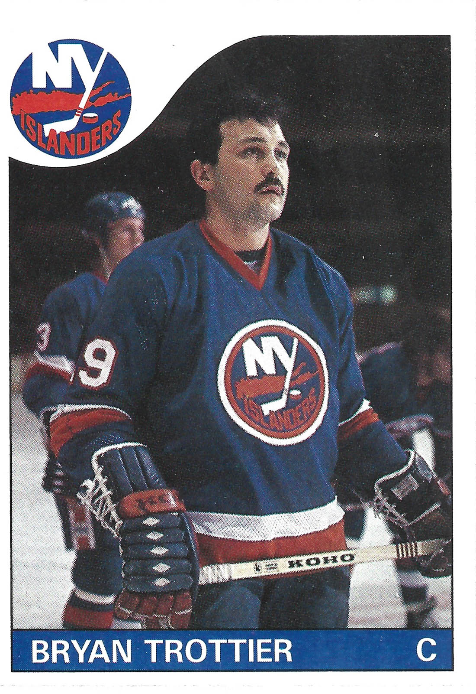

Indigenous People in Sports
Alwyn Morris

Considered to be the most influential indigenous athlete, Alwyn Morris is a member of the Mohawk nation in Kahnawake,
and a two-time medalist for kayaking with his partner Hugh Fisher. winning a gold medal in the K-2 1000m and a bronze medal in the K-2
500m at Los Angeles 1984 making him obtain the name of Member of the Order of Canada, and made him and Hugh in Canada’s Sports Hall of Fame in 2000.
Brigette Lacquette
Brigette Lacquette is influential to young First Nations athletes, especially girls who want to play hockey due to her being the
first First Nation to be playing defense for the Calgary section of the Professional Women's Hockey Players Association (PWHPA) and on
the Canadian national team.
She uses her achievements to go to schools and communities to speak about her story of how she ended up as a hockey player.


Bryan John Trottier

Being of Cree Métis descent Bryan J. Trottier is an NHL hockey player and coach, and played center for 18 seasons in the New York Islanders and
Pittsburgh Penguins, winning six Stanley cups throughout his career. Recognizing his achievements off and on the ice, he was welcomed into Canada’s
Sports Hall of Fame and the Hockey Hall of Fame and became an inspiration to people.